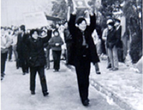

名牌战略阶段，海尔抓住改革开放的机遇，以过硬的质量奠定了在中国冰箱行业的第一品牌。1985年中国电冰箱市场“爆炸式增长”，市场供不应求，很多厂家大上产量，但不注重质量，别的企业年产量都已经百万台了，海尔才不到十万台，但海尔树立 “要么不干，要干就要争第一”的名牌意识，不盲目上产量，扎扎实实做质量。
这时，海尔发生了“砸冰箱”事件，连海尔的上级主管部门都点名批评海尔，但正因为这一事件，唤醒了海尔人“零缺陷”的质量意识。后来，著名导演吴天明拍摄了电影《首席执行官》再现了“砸冰箱”的场景。1989年市场疲软，很多冰箱厂家降价销售，但海尔提价12%仍然受到用户抢购，当时一张海尔冰箱票的价格甚至被炒到上千元。海尔创业仅用四年时间，拿到了中国冰箱行业的第一枚质量金牌。